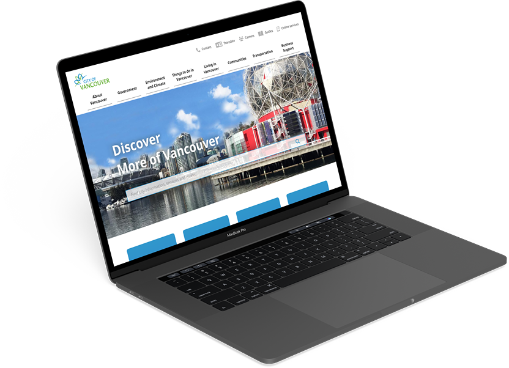

Evaluation based on UX Pyramid
Before diving into user research, we discussed the value provided by the current City of Vancouver website and identified potential challenges to address, using the UX pyramid as our framework.
Level 1: Is it functional?
Yes, the website works for searching information and using services like submitting forms.
Level 2: Is it reliable?
Yes, as a government website, it generally enjoys a high level of trust among users.
Level 3: Is it usable?
Yes and no. While most users can navigate without assistance, some may struggle to find specific information.
Level 4: Is it convenient?
No, some users may need to visit the website for specific information or services but do not find it useful enough to return frequently.
Level 5: Is it pleasurable?
No, the website lacks features that encourage repeat visits. However, as a government site, achieving this level might not be necessary.
Level 6: Is it meaningful?
No, similar to Level 5, it may not be essential for a government website to reach this point.
In conclusion, while the website meets basic functional and reliability standards, improving usability, particularly the information architecture will be key to enhance the overall user experience.